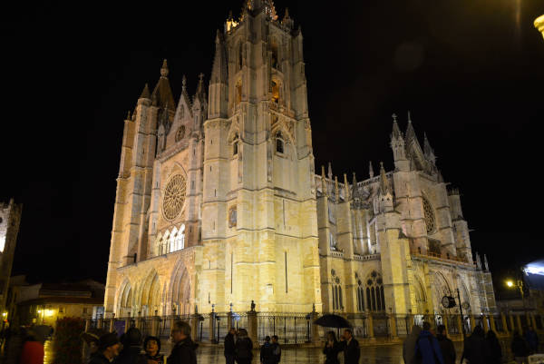
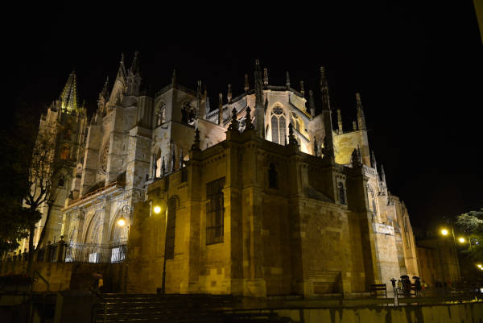
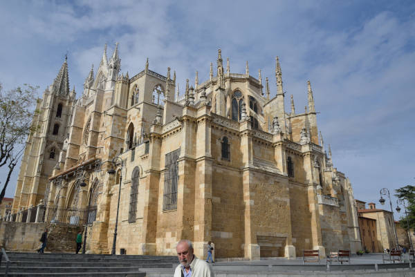
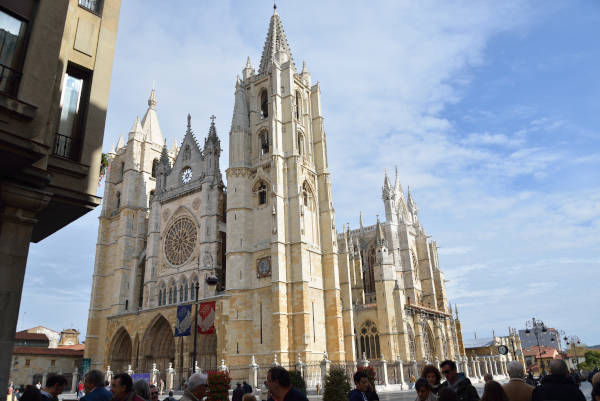
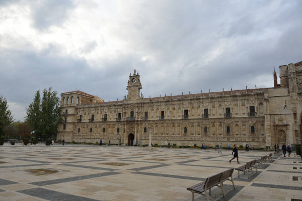
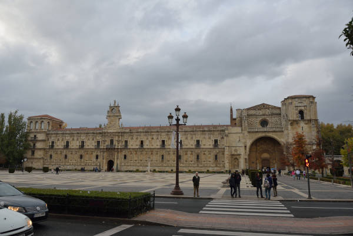
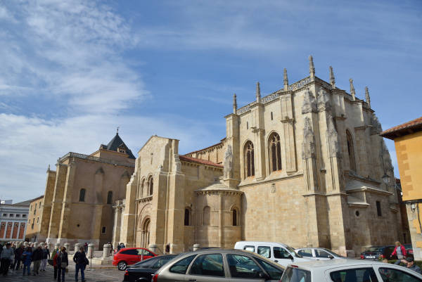
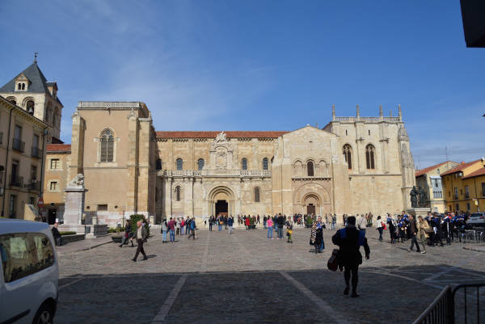
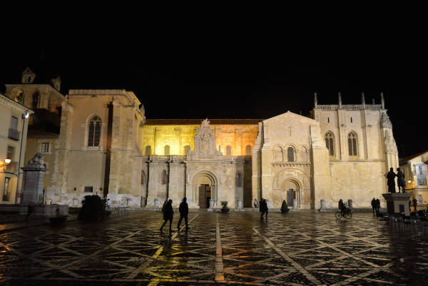

La Ciudad de León nacio como campamento militar romano de la Legio VI Victrix hacia 29 a.
C., su carácter de ciudad campamental se consolidó con el asentamiento definitivo de la
Legio VII Gemina a partir de 74. Tras su parcial despoblación con motivo de la conquista
musulmana de la península, León recibió un nuevo impulso como parte del Reino de Asturias.
En 910 comenzó una de sus etapas históricas más destacadas al convertirse en cabeza del
Reino de León, participando activamente en la Reconquista contra los musulmanes, llegando
a ser uno de los reinos fundamentales en la configuración de España. La ciudad albergó las
primeras Cortes de la historia de Europa en 1188, bajo el reinado de Alfonso IX, gracias a
lo cual en 2010 fue proclamada por el profesor John Keane, el rey de España y la Junta de
Castilla y León como Cuna del Parlamentarismo. Desde la Baja Edad Media la ciudad dejó de
tener la importancia de antaño, en parte debido a la pérdida de su independencia tras la
unión del reino leonés a la Corona castellana, definitiva desde 1301.
Sumida en un período de estancamiento durante la Edad Moderna, en la Guerra de la Independencia
fue una de las primeras ciudades en sublevarse de toda España, y años después del fin de la
misma, en 1833, adquiriría su rango de capital provincial. La llegada del siglo XX trajo
consigo el Plan de Ensanche, que acrecentó la expansión urbanística que venía experimentando
desde finales del siglo XIX, cuando la ciudad se convirtió en un importante nudo de
comunicaciones del noroeste con motivo del auge de la minería del carbón y de la llegada del
ferrocarril.
Su patrimonio histórico y monumental, así como diversas celebraciones que tienen lugar a lo
largo del año, entre las que destaca la Semana Santa, y su situación como paso obligado del
Camino de Santiago, considerado Patrimonio de la Humanidad por la UNESCO, la convierten en una
ciudad receptora de turismo nacional e internacional. Entre sus monumentos más representativos
se encuentran la Catedral, el mejor ejemplo del gótico clásico de estilo francés en España, la
Basílica de San Isidoro, una de las iglesias románicas más importantes de España, tumba de los
reyes de León medievales y considerada como La Capilla Sixtina del Arte Románico, el Monasterio
de San Marcos, primer ejemplo de la arquitectura plateresca y renacentista española, el palacio
de Los Guzmanes, el palacio de los Condes de Luna, la iglesia del Mercado o del Camino la Antigua,
la iglesia de Palat del Rey, la Casa de las Carnicerias y la Casa Botines, de estilo modernista
y realizada por el genial arquitecto catalán Antoni Gaudí; todos ellos declarados Bien de Interés
Cultural. Ejemplo destacado de arquitectura moderna, y uno de los museos de la ciudad, es el
MUSAC, de Mansilla + Tuñón Arquitectos.
Catedral de León




Unas de las mejores vidrieras del mundo.
La Catedral de León es, sin duda, una de las catedrales góticas más hermosas de España.
Construida a principios del siglo XIII y terminada en el siglo XV, presenta una gran unidad
estilística, hecho poco habitual en este país, lo que la dota de una elegancia única, por lo
que recibe el sobrenombre de la Pulchra Leonina.
Es la más francesa de todas las catedrales góticas españolas, su planta es muy parecida a la de
Reims, con tres naves que, en el crucero, se amplían a cinco, y sus sistemas de bóvedas son
similares a los de Amiens y Beauvais.
Las tres fachadas de la Catedral de León exhiben una de las mejores colecciones de esculturas
góticas de la península, destacando la Virgen del Dado, en el parteluz de la fachada norte, la
de San Froilán, patrón de la diócesis, en la fachada sur y la Virgen Blanca, una de las
esculturas más bellas del gótico. Actualmente esta escultura se sitúa en una de las capillas de
la girola y se puede ver una copia en el parteluz de la fachada principal.
Esta fachada principal está flanqueada por dos torres de más de sesenta metros.
Vidrieras Catedral de Leon
Sin embargo, lo más hermoso y espectacular de la Catedral de León no son sus esculturas o su
arquitectura, sino el espacio interior, en el que la luz, con diferentes tonalidades dependiendo
a de la hora del día, nos envuelve.
Las inmensas vidrieras, una de las mejores de Europa, similares a las francesas pero más
coloristas, ya que añaden al azul y el rojo habituales la gama de verdes, ocres y amarillos,
convierten esta catedral en la Catedral de la luz.
También debemos destacar el Coro de la catedral, uno de los más antiguos de España, tallado por
artistas flamencos en el siglo XV.
El claustro, de planta cuadrangular se sitúa en la zona norte del templo y enfrente de él, se
Calles cerca de la Catedralencuentra la entrada al Museo, que ocupa algunas salas del recinto
catedralicio. En este museo se expone piezas del propio edificio y de los diferentes pueblos de
la diócesis.
Y como todo lugar que se precie, también tiene su leyenda, la del topillo que minaba los cimientos
de la Catedral por la noche y que al final, los canteros, consiguieron atrapar y colgaron su
pellejo en la Puerta de San Juan.
La leyenda proviene de la mala calidad de los cimientos sobre los que se asienta la Catedral ya
que este solar, en el que se encontraba anteriormente la antigua catedral y, antes que ella, el
palacio del rey del rey Ordoño II, se levanta sobre las antiguas termas romanas, cuyos hipocaustos
aún permanecen en el subsuelo.
San Marcos de León


El Parador de San Marcos es uno de los más bellos edificios de León. Fue construido a finales del
siglo XII aunque la construcción final es del siglo XV.
Cuando nos acercamos a la fachada de la entrada vemos varias conchas que nos dicen la importancia
que tuvo el hostal en la ruta Jacobea y en el Camino de Santiago.
Y es que fue un hospital de peregrinos en sus orígenes aunque, más tarde, fue utilizado como
prisión (aquí estuvo en cautiverio el pobre Quevedo) y como ministerio de guerra o campo de
concentración durante la guerra civil de España.
La entrada principal, precedida de unos bonitos jardines, es de origen plateresco, muy elegante y
considerada como una de las más importantes por la belleza y calidad de sus arabescos.
San Marcos en el interior
Aunque actualmente es el Parador de León, podemos hacer una visita turística a varias de sus
dependencias. Por ejemplo, el Museo, la Sala Capitular con artesonados del siglo XVI y el
Claustro con unas esculturas muy bellas.
Si queremos también podemos entrar en la cafetería para echar un vistazo al estilo general del
edificio interior, de estilo clásico.
Cerca de San Marcos
Pegada al parador está la iglesia de San Marcos de estilo gótico y una buena sillería.
Bordeando San Marcos a la derecha y siguiendo la avenida de los Reyes Leoneses, empieza la zona
nueva de León. Aquí hay una zona de tapas muy interesante alrededor de Musac, museo de Arte Contemporáneo
y un edificio muy colorista y digno de ver.
Por el lado izquierdo está el Parque de Quevedo, cruzando el puente sobre el río Bernesga, paso
obligatorio del Camino de Santiago.
Basílica de San Isidoro de León




El conjunto de la Basílica de San Isidoro en León está considerado como uno de los conjuntos
románicos más importantes de España.
Fue creado entre los siglos x y XII, y sufrió numerosas remodelaciones con añadidos barrocos y
góticos. Al principio estuvo dedicado a albergar los restos del niño mártir San Pelayo.
Más tarde, en el año 1149, fue consagrado tras recibir durante años numerosas aportaciones de
nobles de la época.
La Basílica de San Isidoro cuenta con el llamado Privilegio Inmemorial de La Exposicición
Permanente en el altar mayor del Santo Sacramento.
Tiene a su entrada las conocidas puertas del Perdón y del Cordero que es la puerta de entrada
principal. Está formada por 3 naves y una cabecera con 3 ábsides. La capilla mayor es del año
1513 y el retablo un poco posterior.
La Torre del Gallo, construida en su primera fase allá por el siglo XI es famosa por su veleta.
Los tesoros de San Isidoro
Los tesoros eran las donaciones que se iban haciendo y se guardaban en la Cámara del Tesoro junto
con las reliquias del templo a la hora de consagrar el edificio. Entre ellas, podemos destacar el
cáliz de ágata del Siglo XI, la arqueta de los esmlates o el pendón de Baeza, sobre el cual fue
bordado la figura ecuestre de San Isidoro.